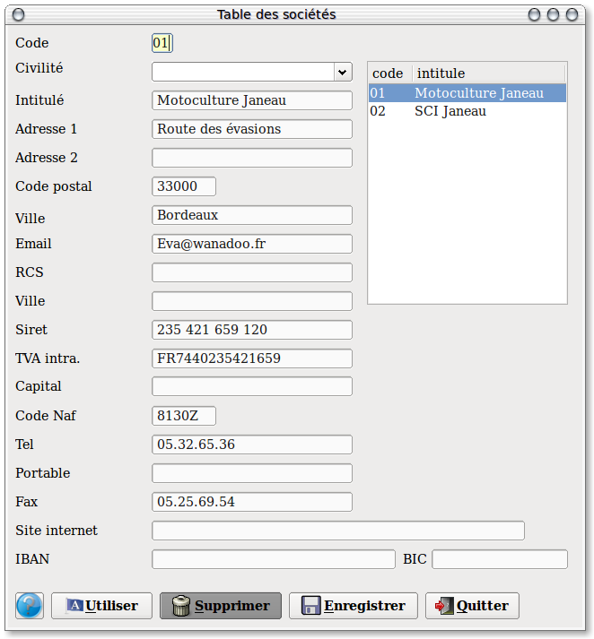
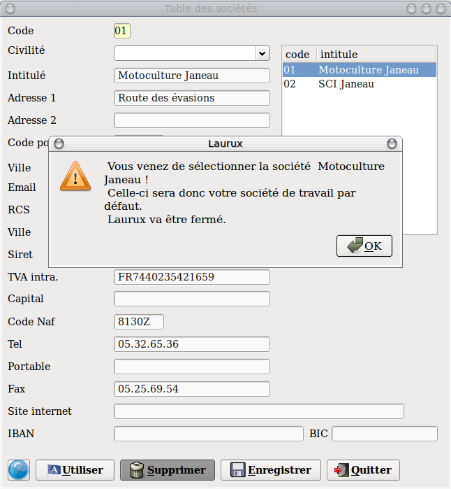
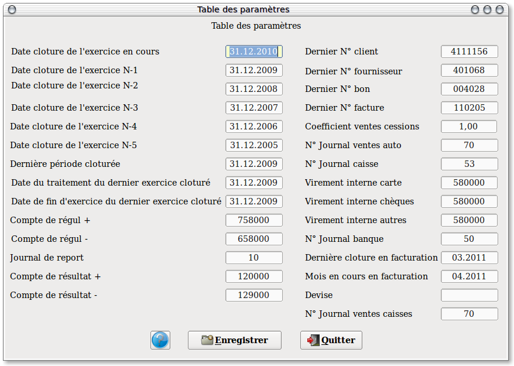
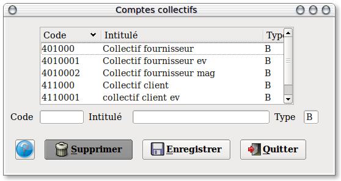
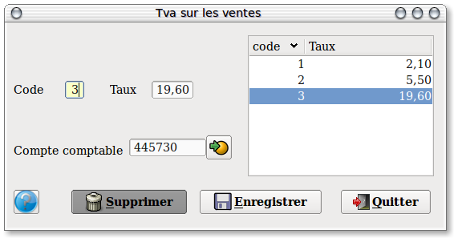
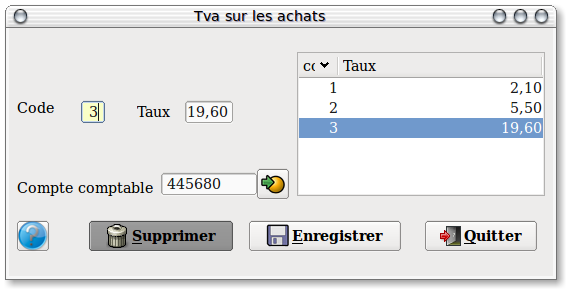
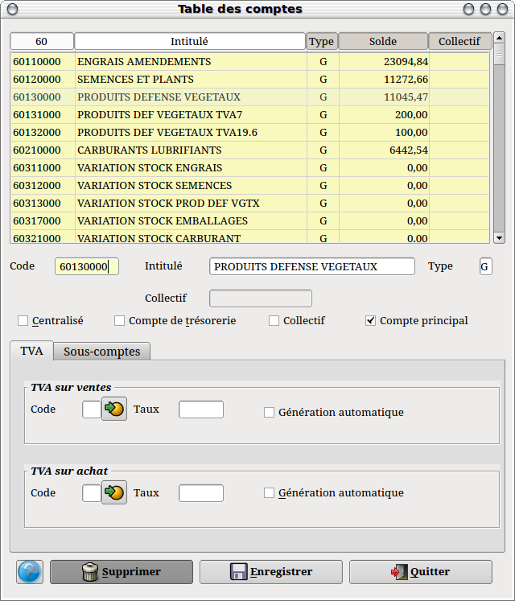
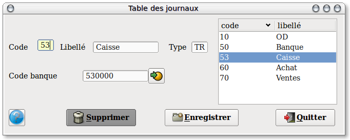
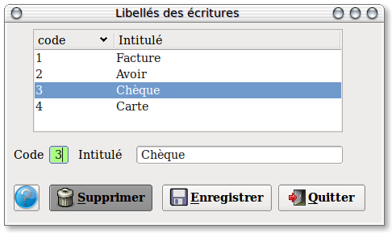

~ Comptabilité Laurux ~

~ Comptabilité Laurux ~ |
|
|
|
Lors d'une création de société et pour une cohérence de saisie, veuillez suivre l'ordre des rubriques SVP.

Note : Un clic sur le bouton " Enregistrer " enregistre la société dans la base et remet tous les champs à blanc.
Dans la partie droite de l’écran vous avez les sociétés déjà crées. En cliquant sur une de celles-ci vous aurez le détail dans la partie gauche. Positionnez-vous dans le champ que vous souhaitez changer et saisissez vos modifications.
Pour créer une nouvelle société il suffit de se positionner dans la zone code, de renseigner la zone avec un code disponible, puis de remplir l’ensemble des autres champs.

Pour utiliser une societe de travail par defaut, selectionner celle-ci puis cliquez sur le bouton "Utiliser"& . Un message vous confirmera votre selection. Validez par OK . Des lors, le numero et l'intitule de la societe s'afficheront dans l'entete de votre menu.
N’oubliez pas d’enregistrer votre travail avant de quitter le programme.
----------------------------------------------------------------------------------------------------------------------

Cette table est utilisée pour renseigner diverses données indispensables lors des différents traitements ou saisies. Vous devez l'initialiser lors d'une création de société.
Soyez très prudent dans son utilisation car des saisies erronées ( surtout dans les dates ) peuvent générer des déséquilibres dans votre comptabilité.
Certaines zones sont mises à jour automatiquement par le programme ( Code dernier client & fournisseur crée, toutes les dates ) . Ne pas les modifier SVP.
N’oubliez pas d’enregistrer votre travail avant de quitter le programme.
----------------------------------------------------------------------------------------------------------------------

Positionnez-vous sur la zone " Code " et saisissez le sur 8 caractères maxi, saisissez ensuite le libellé du Compte, puis le type (B comme Bilan). Le programme contrôle votre saisie et attribue d’office le type " B " s’il y a une erreur de saisie.
N’oubliez pas d’enregistrer votre travail avant de quitter le programme.
----------------------------------------------------------------------------------------------------------------------

Positionnez-vous sur la zone " Code " et saisissez le sur 2 caractères maxi, saisissez ensuite le taux, puis le code comptable correspondant.
N’oubliez pas d’enregistrer votre travail avant de quitter le programme.
----------------------------------------------------------------------------------------------------------------------

Cet écran est identique a celui de la Tva sur les ventes.
N’oubliez pas d’enregistrer votre travail avant de quitter le programme.
----------------------------------------------------------------------------------------------------------------------

Note : Un clic sur le bouton " Enregistrer " enregistre le compte dans la base et remet tous les champs à blanc.
Dans la partie haute de l’écran vous avez les comptes déjà cré. En cliquant sur un de ceux-ci vous aurez le détail dans la partie inférieure. Positionnez-vous dans le champ que vous souhaitez changer et saisissez vos modifications.
Le Code est sur 8 caractères maxi, l’Intitulé sur 25 et le Type sur 1 (G ou B).
La zone " Collectif " (Mouvementée si vous appelez un compte client ou fournisseur) et le bouton " Compte collectif " (Mouvementé si vous appelez un compte collectif) ne sont pas sensitifs.
Cochez le bouton " Centralisé " si vous ne souhaitez pas conserver le détail des écritures.
Cochez le bouton " Compte de trésorerie " s’il s’agit d’un compte de cette nature.
La zone " Tva sur ventes " sert, dans le cas d’un compte de vente, à générer le calcul de la Tva lors de la saisie des écritures de ventes dans la mesure ou le bouton " Génération automatique " est coché.
La zone " Tva sur achats " sert, dans le cas d’un compte d’achat, à générer le calcul de la Tva lors de la saisie des écritures d’achats dans la mesure ou le bouton " Génération automatique " est coché.
Rappel : Les comptes clients (Type C) se créent par la table des clients, les comptes fournisseurs (Type B) par la table fournisseurs, et les comptes de Gestion (Type G) et Bilan (Type B) par la table des comptes. Les comptes collectifs quant à eux se créent par la table des comptes collectifs.
N’oubliez pas d’enregistrer votre travail avant de quitter le programme.
----------------------------------------------------------------------------------------------------------------------

Positionnez-vous sur la zone " Code " et saisissez le sur 2 caractères maxi, saisissez ensuite le libellé de votre journal ( Ventes, achat …), le type ( VE pour les ventes, AC pour les achats, OD pour les journaux OD, TR pour les journaux de trésorerie ), saisir le sens général de l’écriture ( Débit pour les ventes, Crédit pour les achat ) puis s’il s’agit de la création d’un journal de type TR (trésorerie) vous devrez renseigner le compte de trésorerie qui sera la contrepartie automatique des écritures passées par ce journal (512xxxxxx, 530xxxxx).
N’oubliez pas d’enregistrer votre travail avant de quitter le programme.
----------------------------------------------------------------------------------------------------------------------

Ces libellés seront utilisés lors de la saisie de vos écritures ou vous pourrez les rappeler d'un simple clic.
Positionnez-vous sur la zone " Code " et saisissez le sur 2 caractères maxi, saisissez ensuite l'intitulé.
N'oubliez pas d'enregistrer votre travail après chaque création ou modification.
----------------------------------------------------------------------------------------------------------------------